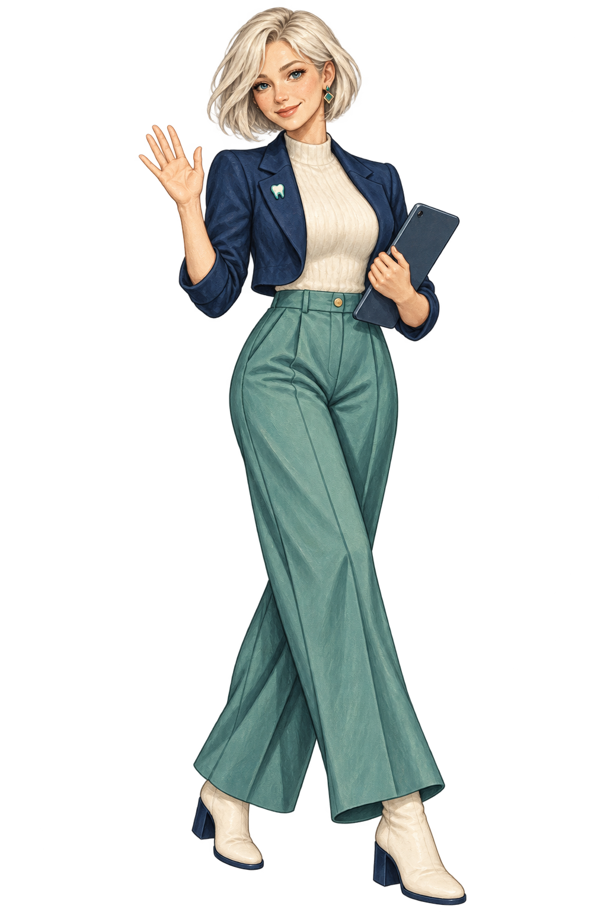
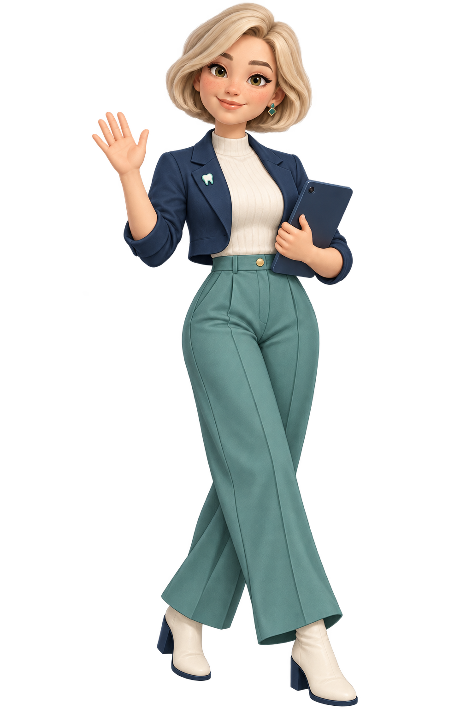
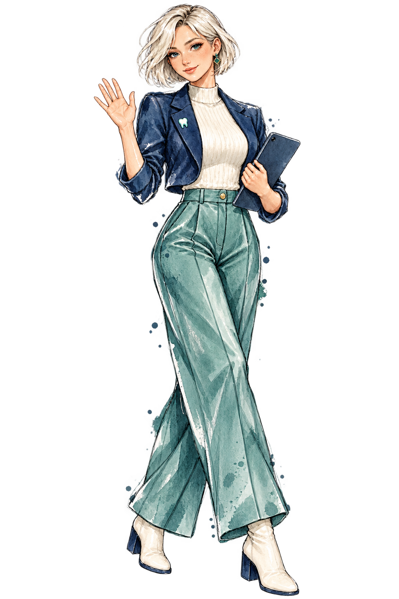
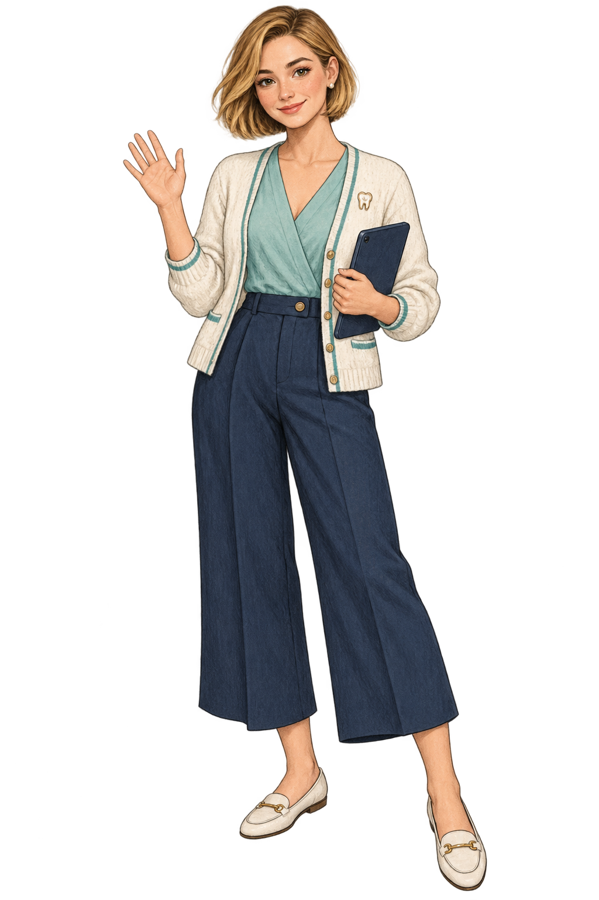
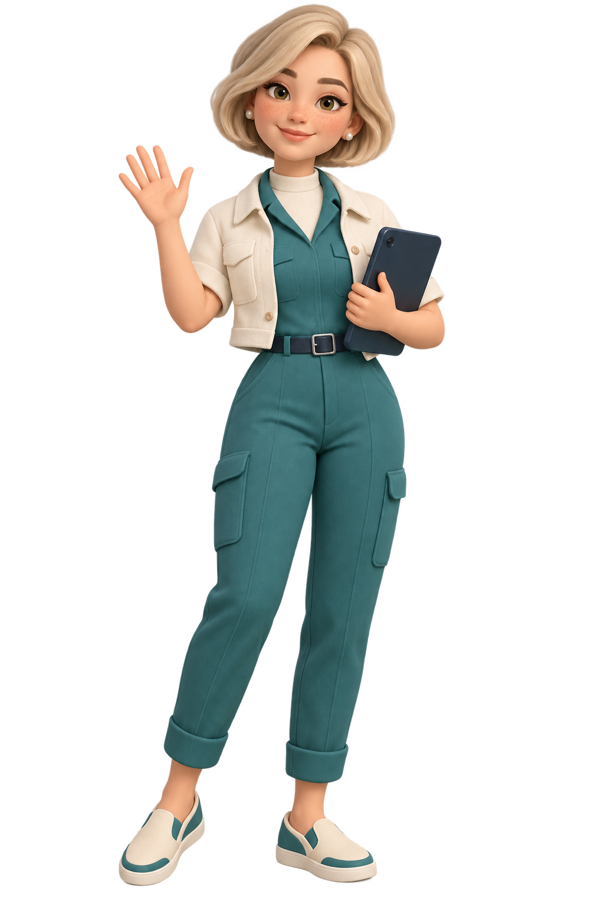
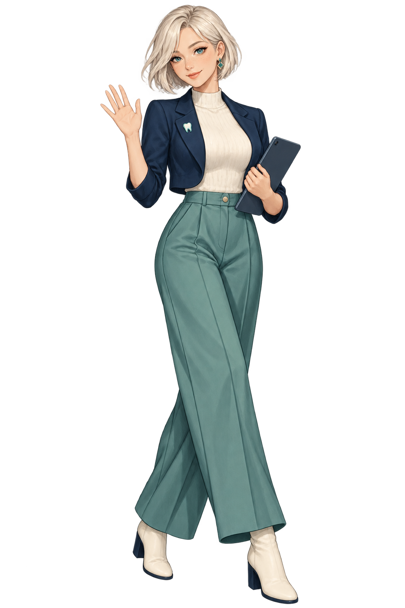

E · Más premium
Gouache editorial
Pintura contemporánea con textura, rostro humano y una presencia sofisticada de revista.
OdonTeck · Exploración v06
Conserva el conjunto editorial completo de Alexia y adopta el acabado tridimensional suave, bonito y expresivo de tu referencia.

Rostro cálido, cabello con volumen y materiales tridimensionales, sin perder el blazer corto, el top acanalado, el pantalón amplio, los botines, el pin dental ni la tableta.

Pintura contemporánea con textura, rostro humano y una presencia sofisticada de revista.

Línea de tinta, transparencias de acuarela y una belleza más ligera, artística y elegante.
Capas recortadas, fibras visibles y una identidad táctil diferente a cualquier estilo anime.
Mi lectura: H es la combinación más fuerte hasta ahora: conserva la identidad editorial del outfit y gana la calidez, volumen y simpatía del estilo 3D.

Cálida, artesanal y confiable. Es la que menos se siente como una muñeca digital.

Amable, fácil de reconocer y con mucho potencial para animaciones y expresiones.

Elegante, juvenil y aspiracional. Es la dirección con mayor impacto visual.